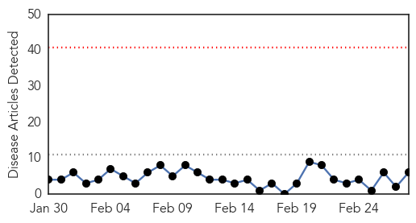
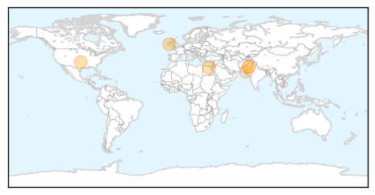
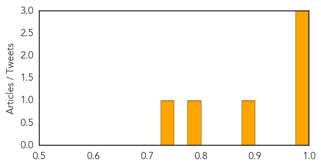
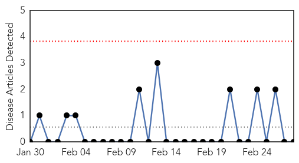

Swine Flu
30-Day Web Trend
0 alerts, 0 warnings

30-Day Twitter Trend
0 alerts, 0 warnings
Article Locations
Article Confidences
Top Articles:
Top Tweets:
- 0.778
- MoH: Case of swine flu (H1N1) in Makkah, SA for Egyptian visitor. http://t.co/8gWutmDPpJ
Ebola
30-Day Web Trend
0 alerts, 0 warnings

30-Day Twitter Trend
0 alerts, 0 warnings

Article Locations

Article Confidences

Top Articles:
-
No articles found for Feb 28, 2014
Top Tweets:
-
No tweets found for Feb 28, 2014